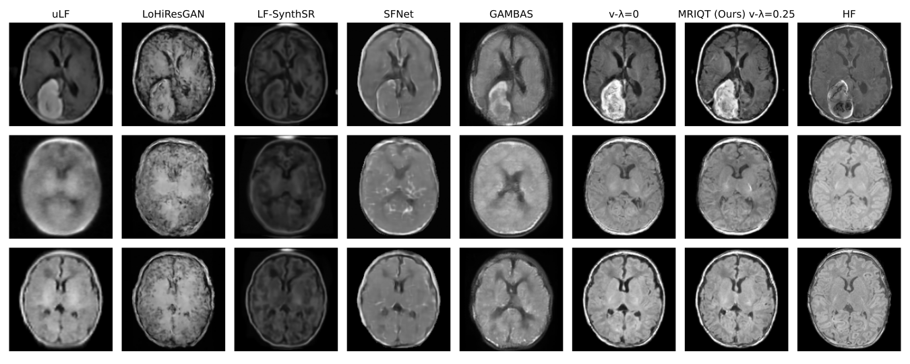
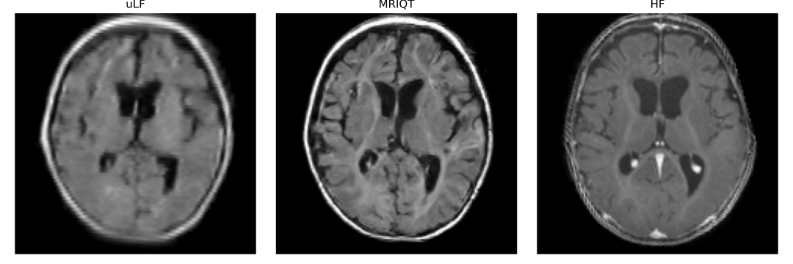
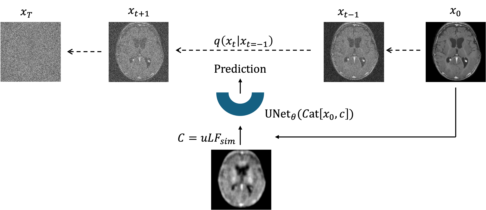
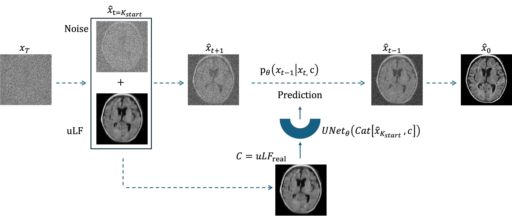

Portable ultra-low-field MRI (uLF-MRI, 0.064T) enables bedside neonatal neuroimaging but suffers from low SNR and reduced diagnostic quality. MRIQT performs 3D image quality transfer (uLF→HF) using a conditional diffusion model guided by physics-aware k-space simulation and an anatomy-preserving 3D perceptual objective.


Key components
Training: MRIQT is trained as a conditional diffusion model using physics-based uLF simulations to guide anatomically faithful reconstruction from noisy inputs.

Inference: Given a real uLF scan, MRIQT iteratively denoises a noisy initialization while conditioning on the uLF measurement, yielding a high-quality reconstruction.

If you use this work in your research, kindly cite our paper.
@misc{alabed2025mriqt,
title = {MRIQT: Physics-Aware Diffusion Model for Image Quality Transfer in Neonatal Ultra-Low-Field MRI},
author = {Malek Al Abed and Sebiha Demir and Anne Groteklaes and Elodie Germani and Shahrooz Faghihroohi and Hemmen Sabir and Shadi Albarqouni},
year = {2025},
eprint = {2511.13232},
archivePrefix = {arXiv},
primaryClass = {cs.CV},
doi = {10.48550/arXiv.2511.13232},
url = {https://arxiv.org/abs/2511.13232}
}